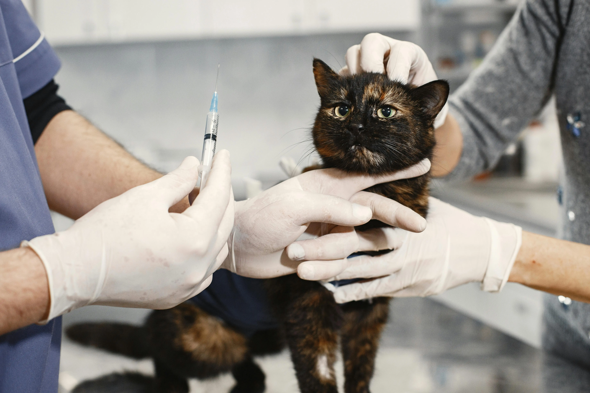

VERIFICAR MICROCHIP
Es muy importante que verifiques los datos almacenados en el registro de identificación de animal de tu comunidad autónoma. Recuerda también actualizar cualquier cambio de teléfono o dirección. Recomendamos, siempre que sea posible, registrar más de un número de teléfono.
-
ACUDE A TU VETERINARIO PARA QUE SOLICITE LA MODIFICACIÓN EN CASO QUE:
- Cambies tu número de teléfono.
- Cambies de dirección.
- Cambies de comunidad autónoma. Cada comunidad autónoma solo tiene acceso a su propia base datos, por lo tanto deberás volver a dar de alta el chip en la comunidad que residas. Si tu mascota se pierde en una comunidad donde no haya sido dado de alta, podrán tener acceso a tus datos para localizarte.
- Añadir otro número de teléfono.